LangChain Fundamentals
Topics: LangChain prompts, chains, structured output, routing; document loaders, splitters, embeddings, vector stores, RAG
Project milestone: Prompt templates for each agent, document loaders, ChromaDB store, basic RAG chain
Contents (37 sections)
- LangChain: Prompts, Chains and Routing
- What You'll Learn
- 1. What is LangChain?
- 2. A Chat Model Without an API Key
- 3. Prompts
- 4. Chains and the Pipe Operator
- 5. Structured Output
- 6. Sequential Chains
- 7. Routing
- 8. From the Lesson to Your Project
- 9. Check Your Understanding
- 10. Summary and Further Reading
- Chat with Your Documents (RAG)
- What You'll Learn in This Part
- 1. Why a Model Alone Is Not Enough
- 2. From Retriever-Reader to RAG
- 3. The Pipeline: Index Once, Answer Many Times
- 4. Step 1: Load
- 5. Step 2: Split
- 6. Step 3: Embed
- 7. Step 4: Store
- 8. Step 5: Retrieve and Generate
- 9. Measuring the Retriever
- 10. RAG Chain or RAG Agent?
- 11. From the Lesson to Your Project
- 12. Check Your Understanding: RAG
- 13. Summary and Further Reading: RAG
- Chat with Databases
- Introduction
- Chat Interface
- Database Schema
- How LangChain Connects to Databases
- Security Considerations
- Process Flow
- Sample Queries
- Implementation Code
- Closing note
LangChain: Prompts, Chains and Routing
From one call to a model, to a program built around it. Level: intermediate · about 75 minutes · LangChain 1.x, Hugging Face Transformers. The lesson follows the order of the course slides on LangChain and uses the current LangChain documentation for all code.
What You'll Learn
By the end of this part you will be able to:
- Say what LangChain is, and name the packages it is divided into today
- Load a chat model that runs inside Google Colab without an API key
- Write a prompt template and fill it with values
- Join a prompt, a model and an output parser into a chain with the pipe operator
| - Turn a model's free text into a checked Python object
- Build a sequential chain, with one or with several inputs and outputs
- Route a question to the prompt that suits it
- Read LangChain code written in 2023–2024 and rewrite it for the current library
Goal: five small working programs (a translator, an email assistant, a review analyser, a two-step code generator and a subject router), which are the building blocks of the agents in your project.
Prerequisites: Week 2 and Week 3. You should be comfortable with Python dictionaries and functions, and with loading a model from the Hugging Face Hub.
Abbreviations used in this lesson
| Abbreviation | Stands for | In one line |
|---|---|---|
| LLM | Large Language Model | A model that continues or answers text |
| API | Application Programming Interface | The way one program asks another for a service; here, a model that runs on a company's servers |
| LCEL | LangChain Expression Language | The notation that joins components with | |
| JSON | JavaScript Object Notation | A text format for structured data: {"key": value} |
| RAG | Retrieval-Augmented Generation | Finding relevant text first and giving it to the model with the question; the subject of the second part of this week |
| GPU, CPU | Graphics / Central Processing Unit | A language model answers much faster on a GPU |
1. What is LangChain?
A language model does one thing: it receives text and returns text. An application needs more than that. It must build the text that goes in, call the model, check what comes out, and often fetch documents or call other programs on the way. LangChain is an open-source Python framework for writing this surrounding program. It gives every kind of component (a prompt, a model, a parser, a document loader, a vector store) a standard interface, so that components can be joined together and exchanged for one another.
The practical benefit is exchange. In this lesson you will write each program once, with a small model that runs in Colab. If you later change one line to use a hosted model from OpenAI or Google, the remainder of the program stays as it is.
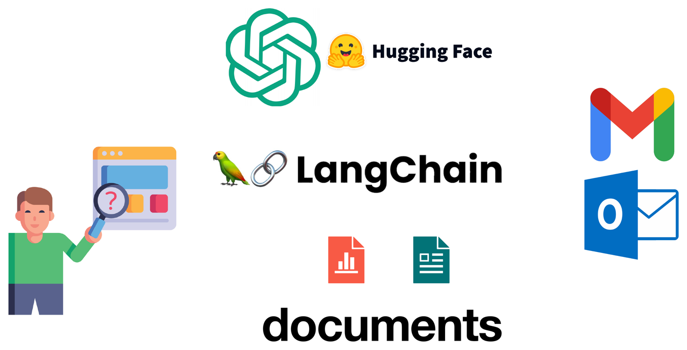
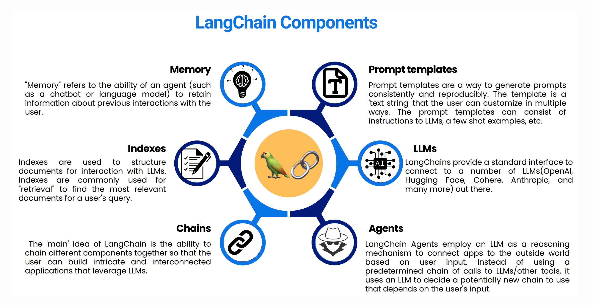
NoteTwo names in this figure have changed. The figure uses the vocabulary of 2023. What it calls Indexes is now described as retrieval: document loaders, text splitters, embedding models, vector stores and retrievers, which are the subject of the second part of this week. What it calls LLMs are now mostly chat models. If you look for an "Indexes" page in the current documentation, you will not find one.
This week covers four of the six components: prompt templates, models and chains in this part, and retrieval in the next. Agents are the subject of Weeks 5 and 9, and memory is treated in Week 5 with LangGraph.
The packages
LangChain is installed as several packages. Knowing which package holds what makes the import lines in this lesson readable.
| Package | What it holds | Used in this lesson for |
|---|---|---|
langchain-core |
The basic interfaces: prompts, messages, output parsers, and the pipe operator | Almost every example |
langchain |
Agents and helpers for choosing a model (create_agent, init_chat_model) |
The optional hosted model |
langchain-huggingface, langchain-openai, … |
One package per provider | The local chat model and the embedding model |
langchain-text-splitters |
Text splitters | Part 2 |
langchain-community |
Integrations maintained by the community, among them most document loaders | Part 2 |
langchain-classic |
The older chain classes, kept so that old programs still run | Reading 2024 code |
langgraph |
Graphs of steps with state, loops and memory | Week 5 |
Common confusionMost LangChain code on the internet is written for an older version. LangChain 1.0 moved the classes that older tutorials are built on (
LLMChain,SimpleSequentialChain,MultiPromptChainand others) out of thelangchainpackage and intolangchain-classic. A line such asfrom langchain.chains import LLMChainnow fails withModuleNotFoundError: No module named 'langchain.chains'. The course slides were written in January 2024, so each section of this lesson shows the slide's code beside its current form. The ideas are the same; the notation is shorter.
2. A Chat Model Without an API Key
The slides call OpenAI's models, which need an account, a key and payment. In this lesson the default model is Qwen2.5-1.5B-Instruct, an open model with about 1.5 billion parameters, published under the Apache 2.0 licence. It runs inside your own Colab session, so no registration is needed, and it understands Arabic as well as English.
Before you run the cell, choose Runtime → Change runtime type → T4 GPU. The code also works on a CPU, but each answer then takes far longer.
▶ Try it examples run inside this page, in your web browser — good for quick experiments with plain Python, NumPy, pandas, scikit-learn and matplotlib. From here on the examples need more:
- Everything else → Google Colab. PyTorch, Transformers, LangChain and LangGraph need a full Python installation and large libraries, which a web page does not have. ▶ Run in Colab opens this week's notebook in Google Colab, at the cell that holds the example. The notebook contains all of the lesson's code in order, and its first cell installs what is missing. Sign in with a Google account and run the cells from the top, because later examples reuse earlier ones.
- A GPU makes this lesson fast. The examples run a small language model inside the notebook. In Colab choose Runtime → Change runtime type → T4 GPU before running it. Without a GPU the code still works, but each answer takes much longer.
- API keys. The first two parts of this lesson need no key and no registration. Only the optional hosted-model cell and the last part, Chat with Databases, call a service on the internet with your own key. In Colab, add it once in the 🔑 Secrets panel (left bar) and switch on Notebook access — never type a key into your code.
- Exception — programs that keep running. Web apps and local servers (Django, Streamlit, Ollama, MCP servers, Playwright) are files and programs, not notebook steps. Those examples have 💻 Open in Codespaces, a free cloud computer with a terminal, already set up for this course (guide).
import torch
from transformers import AutoModelForCausalLM, AutoTokenizer, pipeline
from langchain_huggingface import ChatHuggingFace, HuggingFacePipeline
MODEL_ID = "Qwen/Qwen2.5-1.5B-Instruct"
tokenizer = AutoTokenizer.from_pretrained(MODEL_ID)
model = AutoModelForCausalLM.from_pretrained(MODEL_ID)
if torch.cuda.is_available():
model = model.half().to("cuda") # half precision on the GPU: less memory, faster
generator = pipeline("text-generation", model=model, tokenizer=tokenizer,
max_new_tokens=300, do_sample=False, return_full_text=False)
llm = ChatHuggingFace(llm=HuggingFacePipeline(pipeline=generator))
print("Running on:", "GPU" if torch.cuda.is_available() else "CPU")
print(llm.invoke("In one sentence, what is LangChain?").content)Move the pointer over the underlined parts of the code to see what each one does.
The first run downloads the model, so allow a few minutes. The last line is your first LangChain call: invoke sends an input and returns a message object, whose text is in .content.
TermsLLM and chat model. An LLM in the older sense receives one string and continues it. A chat model receives a list of messages, each with a role, and returns one message. The roles are system (instructions for the whole conversation), human (what the user says) and AI (what the model replies). Almost every current model is a chat model, and LangChain's current interfaces are built for them. The variable is still named
llmhere, as in the slides and in most tutorials.
NoteWhat a small model can and cannot do. A model of this size translates, summarises, rewrites and answers from a given text reasonably well. It is weaker than a large hosted model at following strict output formats, at long reasoning, and at writing longer programs. When an example in this lesson gives a poor answer, read the prompt that was sent before you conclude that the code is wrong: Section 3 shows how.
Optional: a hosted model instead
If you have a key for a hosted model, two lines replace the local model, and every later example works unchanged. This is the exchange that Section 1 promised. The cell does nothing until you change False to True, so the notebook runs without a key.
USE_HOSTED_MODEL = False # change to True only if you have an API key
if USE_HOSTED_MODEL:
# The key is read from Colab's Secrets panel (the key icon in the left bar), under the name OPENAI_API_KEY.
# Model names change often: take a current name from the provider's own list.
from langchain.chat_models import init_chat_model
llm = init_chat_model("openai:gpt-4o-mini", temperature=0)init_chat_model takes a string of the form provider:model. For Google's models the string begins with google_genai:, the package to install is langchain-google-genai, and the key is named GOOGLE_API_KEY.
3. Prompts
A prompt is the input that is passed to the model. The slides put it this way: prompts are the new way to program models. In an application the prompt is almost never a fixed sentence. It has a fixed part, written by the developer, and places for values that arrive at run time: the user's text, a language, a retrieved document. A prompt template holds the fixed part and names the places.
The first use case in the slides is a translation app: the user chooses a language, types a sentence and receives the translation.
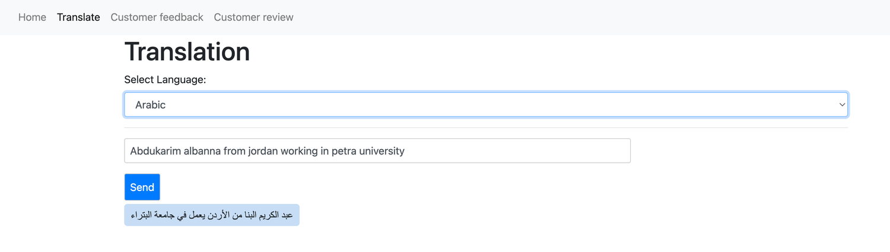
from langchain_core.prompts import ChatPromptTemplate
translate_prompt = ChatPromptTemplate.from_messages([
("system", "You are a translator. Translate the user's text into {language}. Reply with the translation only."),
("human", "{text}"),
])
messages = translate_prompt.format_messages(
language="Arabic",
text="Abdulkarim Albanna is from Jordan and works at the University of Petra.",
)
for m in messages:
print(f"{m.type}: {m.content}")
print("Input variables:", translate_prompt.input_variables)This cell does not call the model. It prints the messages that would be sent:
system: You are a translator. Translate the user's text into Arabic. Reply with the translation only.
human: Abdulkarim Albanna is from Jordan and works at the University of Petra.
Input variables: ['language', 'text']The template found the two placeholders, {language} and {text}, by itself. Now send the messages to the model:
reply = llm.invoke(messages)
print(reply.content)TipWhen a result is poor, print the prompt.
format_messagesshows exactly what the model receives. Most problems in an LLM application are visible there: a placeholder that was filled with the wrong value, an instruction that is ambiguous, or a document that was never inserted.
Common confusionA literal brace must be doubled. The template treats everything between
{and}as a placeholder. To show the model a real brace, for example in a JSON example, write{{and}}. A single brace gives aKeyErroror an error about a missing variable.
Few-shot examples and example selectors
A prompt can also teach by example. Showing the model a few solved cases before the real one is called few-shot prompting, and it is often the quickest way to fix the form of an answer. In a chat prompt each example is a pair of messages: a human message with the input, and an AI message with the answer you want.
from langchain_core.prompts import FewShotChatMessagePromptTemplate
examples = [
{"review": "The screen is sharp and the battery lasts two days.", "label": "positive"},
{"review": "It stopped charging after a week.", "label": "negative"},
{"review": "وصل الجهاز في موعده وهو يعمل جيدا.", "label": "positive"},
]
example_prompt = ChatPromptTemplate.from_messages([("human", "{review}"), ("ai", "{label}")])
few_shot = FewShotChatMessagePromptTemplate(example_prompt=example_prompt, examples=examples)
sentiment_prompt = ChatPromptTemplate.from_messages([
("system", "Classify the customer review as positive or negative. Reply with one word."),
few_shot,
("human", "{review}"),
])
messages = sentiment_prompt.format_messages(review="The keyboard broke on the second day.")
for m in messages:
print(f"{m.type}: {m.content}")
print("Model:", llm.invoke(messages).content)The loop prints the prompt before the model is called. The three examples appear as a short conversation that has already taken place, and the real review is the last message:
system: Classify the customer review as positive or negative. Reply with one word.
human: The screen is sharp and the battery lasts two days.
ai: positive
human: It stopped charging after a week.
ai: negative
human: وصل الجهاز في موعده وهو يعمل جيدا.
ai: positive
human: The keyboard broke on the second day.With three examples, all of them can go into every prompt. With three hundred they cannot, and most would be irrelevant to any one input. An example selector chooses, for each input, which examples to include. The slides list four kinds.
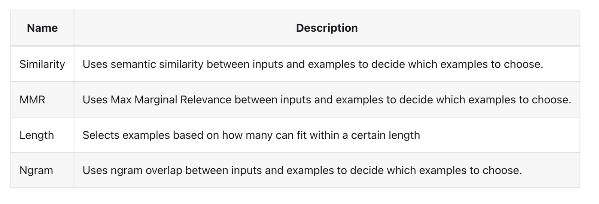
NoteTwo of these selectors are retrieval in miniature. The Similarity and MMR selectors embed the examples, store the vectors, and pick the examples closest to the input. That is the mechanism of the second part of this week, applied to examples instead of documents. Three of the four classes are in
langchain_core.example_selectors; the n-gram selector is inlangchain_community.
The email assistant
The second use case answers a customer's email in the customer's language. Only the system message changes; the code has the same shape. The template is reusable: the same object serves every email and every language.
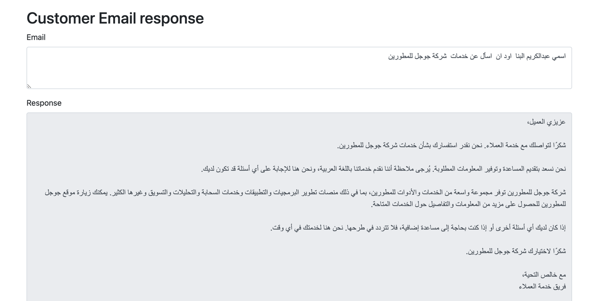
email_prompt = ChatPromptTemplate.from_messages([
("system", "You work in customer service for a software company. Write a short, polite reply "
"to the customer's email. Write the reply in {language}."),
("human", "{email}"),
])
messages = email_prompt.format_messages(
language="Arabic",
email="اسمي عبدالكريم البنا، أود أن أسأل عن خدمات الشركة للمطورين.",
)
print(llm.invoke(messages).content)4. Chains and the Pipe Operator
In Section 3 two steps were written by hand: fill the template, then call the model. A chain joins such steps so that the output of each becomes the input of the next. In current LangChain a chain is written with the pipe operator |, a notation called the LangChain Expression Language (LCEL).
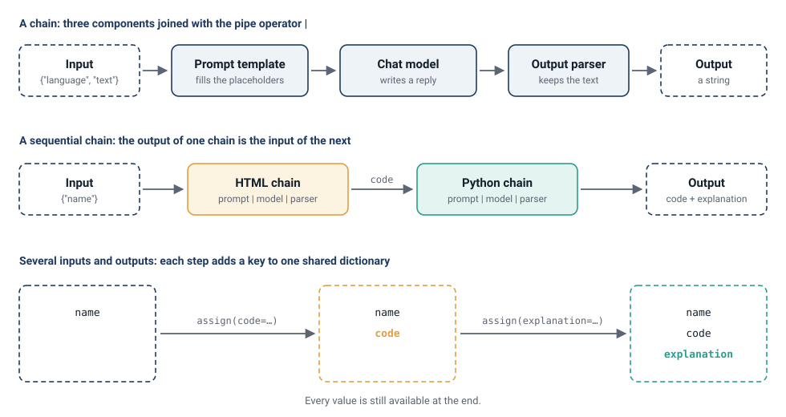
from langchain_core.output_parsers import StrOutputParser
translate_chain = translate_prompt | llm | StrOutputParser()
print(translate_chain.invoke({"language": "French", "text": "Good morning, how are you?"}))Read the first line from left to right. The dictionary given to invoke goes into the prompt template, which produces messages. The messages go into the model, which produces a message. That message goes into StrOutputParser, which keeps its text. The chain as a whole receives a dictionary and returns a string.
Every chain has the same three methods, whatever it contains:
# batch: several inputs in one call
results = translate_chain.batch([
{"language": "German", "text": "Where is the library?"},
{"language": "Spanish", "text": "Where is the library?"},
])
print(results)
# stream: receive the reply piece by piece, as a chat window shows it
for piece in translate_chain.stream({"language": "Arabic", "text": "The lecture starts at ten."}):
print(piece, end="", flush=True)TermsRunnable. Anything that can stand on either side of
|is called a Runnable: a prompt template, a model, a parser, a retriever, or a whole chain. All of them offerinvoke,batchandstream. Because a chain is itself a Runnable, chains can be joined into larger chains, which is what Sections 6 and 7 do.
The same chain in the 2024 notation
The slides define this chain with the class LLMChain: "an LLMChain consists of a PromptTemplate, a model and an optional output parser. It takes input variables, uses the PromptTemplate to format them into a prompt, passes the prompt to the model, and uses the output parser, if one is given, to parse the output." That description still fits exactly; only the way of writing it has changed.
# 2024 (course slides). Today this needs: pip install langchain-classic
from langchain_classic.chains import LLMChain
translate_chain_2024 = LLMChain(llm=llm, prompt=translate_prompt)
translate_chain_2024.run(language="French", text="Good morning, how are you?")
# Current: the same three parts, joined with |
translate_chain = translate_prompt | llm | StrOutputParser()
translate_chain.invoke({"language": "French", "text": "Good morning, how are you?"})5. Structured Output
The third use case in the slides reads a customer review and extracts three facts from it: whether the item was a gift, how many days the delivery took, and what the customer said about the price. A program that receives this answer cannot work with a paragraph. It needs a Python object with three fields.
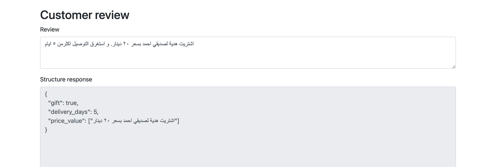
The method has three steps: describe the object you want, tell the model to answer in that form, and parse the answer. The description is a Pydantic class, which is a Python class whose fields have types that are checked.
from pydantic import BaseModel, Field
from langchain_core.output_parsers import PydanticOutputParser
class Review(BaseModel):
gift: bool = Field(description="Was the item bought as a gift for someone else?")
delivery_days: int = Field(description="Number of days the delivery took; -1 if the review does not say")
price_value: list[str] = Field(description="Sentences or phrases about the price or the value of the item")
parser = PydanticOutputParser(pydantic_object=Review)The parser does two jobs. The first is to write the instruction for the model. Print it:
print(parser.get_format_instructions())The output is a paragraph that asks for JSON and gives the schema of the three fields, built from the class above. The second job is to turn the model's reply into a Review object. You can try that without the model:
review = parser.parse('{"gift": true, "delivery_days": 5, "price_value": ["بسعر ٢٠ دينار"]}')
print(review)
print(review.delivery_days + 1) # a real integer, not the text "5"gift=True delivery_days=5 price_value=['بسعر ٢٠ دينار']
6Now build the chain. The format instructions are a value that never changes, so they are fixed in the template once, with partial.
review_prompt = ChatPromptTemplate.from_messages([
("system", "Extract information from the customer review.\n{format_instructions}"),
("human", "{review}"),
]).partial(format_instructions=parser.get_format_instructions())
review_chain = review_prompt | llm | parser
from langchain_core.exceptions import OutputParserException
try:
result = review_chain.invoke({"review": "اشتريت هدية لصديقي أحمد بسعر ٢٠ دينار، واستغرق التوصيل أكثر من ٥ أيام."})
print(result)
print("Gift?", result.gift, "| Days:", result.delivery_days)
except OutputParserException as error:
print("The model's reply did not fit the Review class:\n", error)The review says: "I bought a gift for my friend Ahmad for 20 dinars, and the delivery took more than 5 days."
Common confusionThe parser checks the answer; it does not force it. The instruction asks the model for JSON, and a small model does not always obey. It may add a sentence before the JSON or leave a field out. The parser then raises an
OutputParserExceptionwhose message shows the text that the model wrote, and the cell above catches it and prints it. This is the correct behaviour: a program should notice a malformed answer, not continue with wrong data. To see the raw reply on its own, run the chain without its last step:(review_prompt | llm | StrOutputParser()).invoke(...).
With a hosted model: with_structured_output
Large hosted models have a built-in way of returning structured data, and the current documentation recommends it. The model is given the class directly; no format instructions and no parser are needed.
# Works with hosted chat models (OpenAI, Google, Anthropic and others)
structured_llm = llm.with_structured_output(Review)
result = structured_llm.invoke("I bought it as a gift for my friend. It arrived after 5 days and was worth the 20 dinars.")NoteWhy this lesson uses the parser. The local Hugging Face wrapper does not support this method for a Pydantic class: the call raises
NotImplementedError. The parser method works with every model, because it relies only on text going in and text coming out. It is also the method of the course slides, so nothing is lost by learning it first.
6. Sequential Chains
A sequential chain runs chains one after another: the output of one is the input of the next. The slides distinguish two kinds, one with a single input and output, and one with several.
The example from the slides has two steps. The first model call writes an HTML page for a small program that teaches children programming. The second receives that HTML, converts it into Python and explains it.
html_prompt = ChatPromptTemplate.from_template(
"You are a web developer. Write a short HTML page for a program that teaches children "
"programming. The program is: {name}. Reply with the HTML code only."
)
python_prompt = ChatPromptTemplate.from_template(
"You are a Python developer. Convert the following HTML page into a short Python program "
"that does the same job, then explain the program in three sentences.\n\n{code}"
)
html_chain = html_prompt | llm | StrOutputParser()
python_chain = python_prompt | llm | StrOutputParser()
overall_chain = {"code": html_chain} | python_chain
print(overall_chain.invoke({"name": "add two numbers"}))The line that joins the two chains is {"code": html_chain} | python_chain. A dictionary on the left of | means: run each value, and put the result under its key. Here html_chain runs, and its output becomes the value of code, which is the placeholder that python_prompt expects.
This chain makes two model calls, each of up to 300 tokens, so it is the slowest example of the lesson. On a CPU it can take a few minutes.
Several inputs and outputs
The chain above returns only the final text; the HTML is lost on the way. To keep every intermediate result, let each step add a key to one dictionary, with RunnablePassthrough.assign.
from langchain_core.runnables import RunnablePassthrough
full_chain = (
RunnablePassthrough.assign(code=html_chain)
| RunnablePassthrough.assign(explanation=python_chain)
)
result = full_chain.invoke({"name": "add two numbers"})
print(result.keys())
print(result["code"][:300])result is a dictionary with three keys: name, which you supplied, and code and explanation, which the two steps added. A later step can use any of them: a third prompt could contain both {name} and {code}.
The slides draw the general case: four chains, in which one user input feeds two chains, and the last chain receives the outputs of two earlier ones. Each arrow in the picture is one key of the shared dictionary.
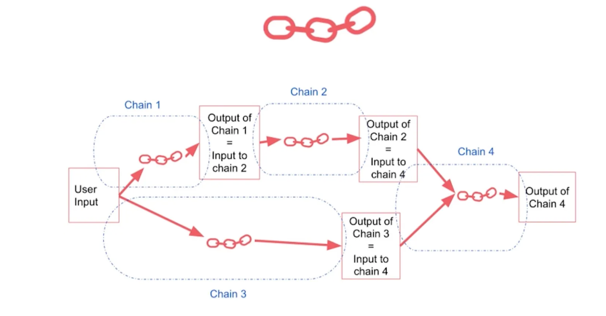
The same chains in the 2024 notation
This is the script from the course, shortened. On the current libraries it stops at its first line.
# 2024 (course slides)
from langchain.llms import OpenAI # ModuleNotFoundError today
from langchain.chains import LLMChain # ModuleNotFoundError today
from langchain.chains import SimpleSequentialChain # ModuleNotFoundError today
llm = OpenAI(temperature=.7)
html_chain = LLMChain(llm=llm, prompt=html_prompt)
python_chain = LLMChain(llm=llm, prompt=python_prompt)
overall_chain = SimpleSequentialChain(chains=[html_chain, python_chain], verbose=True)
python_code = overall_chain.run("add two numbers")| 2024 | Current |
|---|---|
from langchain.llms import OpenAI |
A chat model from a provider package, or init_chat_model(...) |
LLMChain(llm=llm, prompt=prompt) |
prompt | llm | StrOutputParser() |
SimpleSequentialChain(chains=[a, b]) |
{"code": a} | b |
SequentialChain(...) with output_key and input_variables |
RunnablePassthrough.assign(code=a) | RunnablePassthrough.assign(explanation=b) |
chain.run("add two numbers") |
chain.invoke({"name": "add two numbers"}) |
7. Routing
Sometimes one prompt cannot serve every input. A physics question is answered best by a prompt that speaks as a physics teacher, and a history question by another. Routing means sending each input to the chain that suits it. The slides build this with a class named RouterChain, in nine steps.
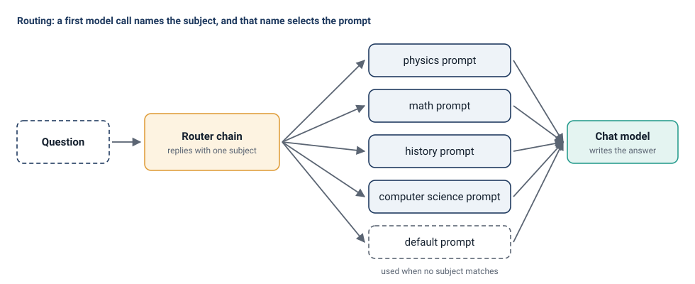
The current form needs three pieces: the destination prompts, a small chain that names the subject, and a function that picks the prompt.
teacher = {
"physics": "You are a physics professor. Explain concisely and name the law or principle involved.",
"math": "You are a mathematician. Break the problem into steps and solve them in order.",
"history": "You are a historian. Give dates and causes, and say how certain the evidence is.",
"computer science": "You are a computer scientist. Explain the idea, then give its time and space cost.",
}
subject_prompts = {
subject: ChatPromptTemplate.from_messages([("system", instruction), ("human", "{input}")])
for subject, instruction in teacher.items()
}
default_prompt = ChatPromptTemplate.from_messages([("human", "{input}")])
router_prompt = ChatPromptTemplate.from_template(
"Which subject does this question belong to? Choose one of: physics, math, history, "
"computer science, other. Reply with the subject only.\n\nQuestion: {input}"
)
router_chain = router_prompt | llm | StrOutputParser()
print(router_chain.invoke({"input": "What is black body radiation?"}))The last line tests the router alone. It should print one subject. Now the function that turns that word into a prompt, and the whole chain:
from langchain_core.runnables import RunnableLambda
def pick_prompt(info):
subject = info["subject"].strip().lower()
for name, prompt in subject_prompts.items():
if name in subject:
return prompt
return default_prompt # no subject matched
routed_chain = (
RunnablePassthrough.assign(subject=router_chain)
| RunnableLambda(pick_prompt)
| llm
| StrOutputParser()
)
for question in ["What is black body radiation?",
"What are greedy algorithms?",
"What should I cook for dinner?"]:
print("Q:", question)
print("A:", routed_chain.invoke({"input": question}), "\n")Follow one question through the chain. assign adds the key subject to the dictionary, using the router. pick_prompt receives the dictionary and returns one of the prompt templates. When a function inside a chain returns a Runnable, LangChain runs that Runnable on the same input, so the chosen prompt is filled with the question. The model then answers.
Common confusionThe router's reply is text, and text is untidy. The model may reply
Physics,physics.orThe subject is physics. The function therefore lowers the case and tests whether a subject name occurs in the reply, where an exact comparison would fail. The third question matches no subject and falls through to the default prompt. Always give a router a default.
The slides draw the same design with the names of the 2024 classes: a router chain, the destination chains and a default chain.
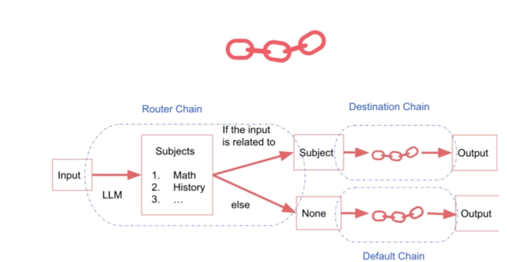
The nine steps of the slides map onto this code as follows.
| Slides (2024) | Current code |
|---|---|
Steps 1–2: prompt templates with a name and a description, then one LLMChain per template in destination_chains |
The dictionary subject_prompts |
| Step 3: a default chain | default_prompt |
Steps 4–5: MULTI_PROMPT_ROUTER_TEMPLATE, RouterOutputParser, LLMRouterChain |
router_prompt and router_chain |
Steps 7–8: MultiPromptChain(router_chain, destination_chains, default_chain) |
pick_prompt and routed_chain |
Step 9: chain.run("What is greedy algorithms?") |
routed_chain.invoke({"input": ...}) |
In Week 5 the same idea returns in LangGraph, where the function that chooses the next step is called a conditional edge.
8. From the Lesson to Your Project
The project milestone for this week asks for a prompt template for each agent. The patterns of this part are the ones you need: a system message that states the agent's role (Section 3), a Pydantic class wherever another agent or program must read the result (Section 5), and a router wherever the pipeline has to choose a path (Section 7). The requirements themselves are on the project page.
9. Check Your Understanding
1. What are the three parts of the simplest chain, and what does each one receive and return?
A prompt template receives a dictionary and returns messages. A chat model receives messages and returns one message. An output parser receives that message and returns a Python value, in the simplest case a string.
2. A tutorial from 2023 begins with from langchain.chains import LLMChain. What happens when you run it today, and what are your two options?
It fails with ModuleNotFoundError, because that class was moved out of the langchain package. One option is to install langchain-classic and import the class from langchain_classic.chains. The other, which is the better one for new code, is to rewrite the chain as prompt | llm | StrOutputParser().
3. Your template contains a JSON example, and filling it raises an error about a missing variable. Why?
The braces of the JSON example are read as placeholders. Literal braces in a template must be doubled: {{ and }}.
4. What are the two jobs of PydanticOutputParser?
It writes the format instructions that are placed in the prompt, and it converts the model's reply into an object of the given class, raising an error if the reply does not fit.
5. The review chain raises OutputParserException. Is the code wrong? What do you do first?
Not necessarily. The exception means that the model's reply was not valid JSON for the class. Look at the raw reply first, by running the chain without the parser. Then make the instruction stricter, shorten the review, or use a stronger model.
6. What is the difference between {"code": html_chain} | python_chain and the version with RunnablePassthrough.assign?
Both run the two chains in order. The first returns only the final text. The second returns a dictionary that still contains the original input and every intermediate result.
7. How many times is the model called for one question in the routed chain, and why does the router need a default?
Twice: once to name the subject and once to answer. The default is needed because some questions belong to none of the listed subjects, and because the router's reply is free text that may match nothing.
10. Summary and Further Reading
What you learned: LangChain gives prompts, models and parsers one interface, so that they can be joined with | and exchanged for one another. A prompt template separates the fixed instruction from the values that arrive at run time. An output parser turns free text into a checked object. Chains can be placed in sequence, can carry a dictionary that grows at each step, and can choose their next step from the model's own reply. The class names of 2024 have gone; the ideas behind them are unchanged.
Further reading
- LangChain documentation: https://docs.langchain.com/oss/python/langchain/overview
- LangChain v1 migration guide (what moved to
langchain-classic): https://docs.langchain.com/oss/python/migrate/langchain-v1 - Chat models in LangChain: https://docs.langchain.com/oss/python/langchain/models
- Structured output: https://docs.langchain.com/oss/python/langchain/structured-output
- Hugging Face chat models in LangChain: https://docs.langchain.com/oss/python/integrations/chat/huggingface
- Qwen2.5-1.5B-Instruct, the model used in this lesson: https://huggingface.co/Qwen/Qwen2.5-1.5B-Instruct
Figure credits. The components figure, the three app screenshots, the example-selector table, and the figures of LangChain's connections, of chains with several inputs and outputs, and of the router chain come from Dr. Abdulkarim Albanna's course slides. The first chain diagram and the first routing diagram were drawn for this lesson. Product logos that appear in the figures are trademarks of their owners.
Chat with Your Documents (RAG)
Give the model the right page before you ask the question. Level: intermediate · about 90 minutes · LangChain 1.x, Sentence-Transformers. The concepts follow Tunstall, von Werra & Wolf, Natural Language Processing with Transformers (Revised Edition, 2022), Chapter 7, "Question Answering", and the worked example uses the same customer reviews as that chapter.
What You'll Learn in This Part
By the end of this part you will be able to:
- Explain why a language model alone cannot answer questions about private or recent documents
- Describe the retriever-reader architecture, and how RAG grew out of it
- Load documents, split them into chunks, embed the chunks and store them in a vector store
- Choose a chunk size with the limits of the embedding model in mind
- Build a chain that retrieves the relevant chunks and answers from them
- Measure a retriever with recall at k, as the textbook does
- Say when a fixed RAG chain is enough and when an agent is the better design
Goal: a working question-answering system over 56 real customer reviews, which you can question, measure and then point at your own documents.
Prerequisites: the first part of this week. The examples continue in the same notebook and use its llm, ChatPromptTemplate, StrOutputParser and RunnablePassthrough.
Abbreviations used in this part
| Abbreviation | Stands for | In one line |
|---|---|---|
| RAG | Retrieval-Augmented Generation | Finding relevant text first and giving it to the model with the question |
| QA | Question Answering | The task of answering a question from text |
| BM25 | Best Match 25 | A classical search method that scores documents by the words they share with the query |
| DPR | Dense Passage Retrieval | Retrieval with two BERT encoders, one for questions and one for passages |
| ANN | Approximate Nearest Neighbour | A fast search for the vectors closest to a given vector, which accepts a small loss of accuracy |
| Portable Document Format | The usual file format of reports and papers |
1. Why a Model Alone Is Not Enough
Suppose a company wants a chatbot that answers questions about its own documents. The first idea is to send each question directly to a commercial model such as ChatGPT. The course slides give three reasons why this fails.
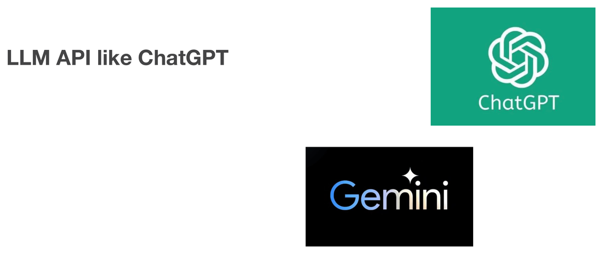
- The model has not seen your documents. It was trained on text that was public at one moment in the past. Internal documents were never in that text, and documents written after that moment could not be.
- The model knows a great deal that is irrelevant. Its training data contains far more unrelated context than context for your question.
- The model fills gaps with invention. Asked about something it has not seen, a language model can produce a fluent answer that is false. This is called hallucination.
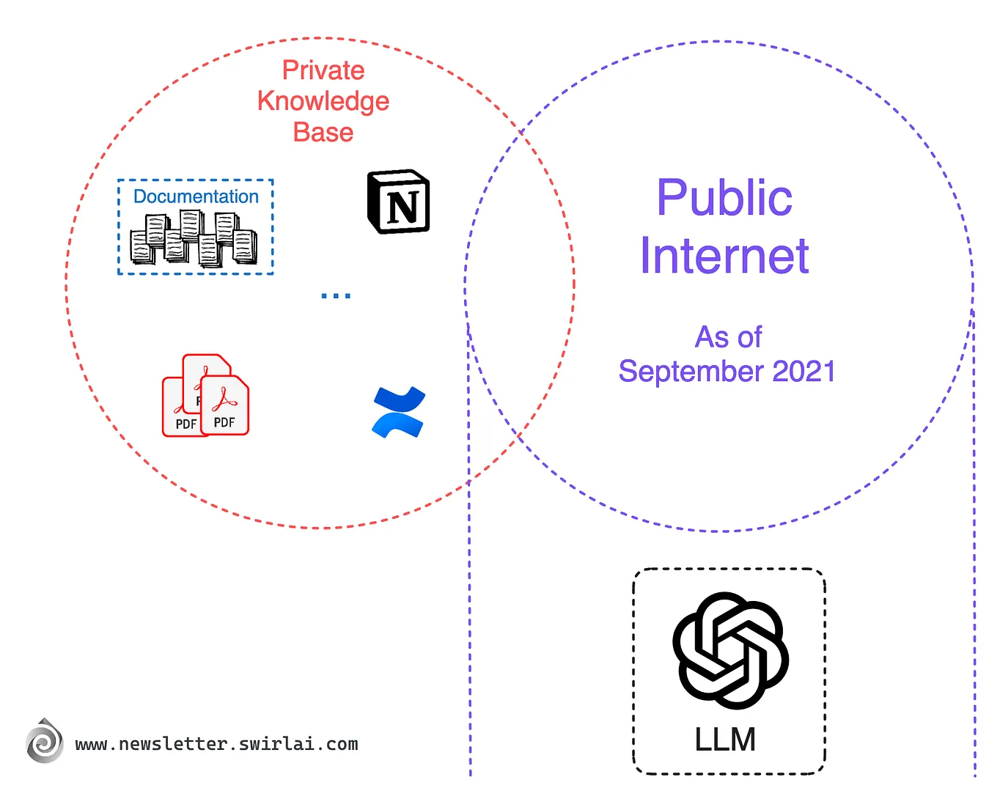
The second idea is to put the documents into the prompt: write the question, paste the whole knowledge base beside it, and instruct the model to answer from that text only. This works for one short document. For a real knowledge base it meets a limit: every model has a context window, a maximum number of tokens that it can read at once.
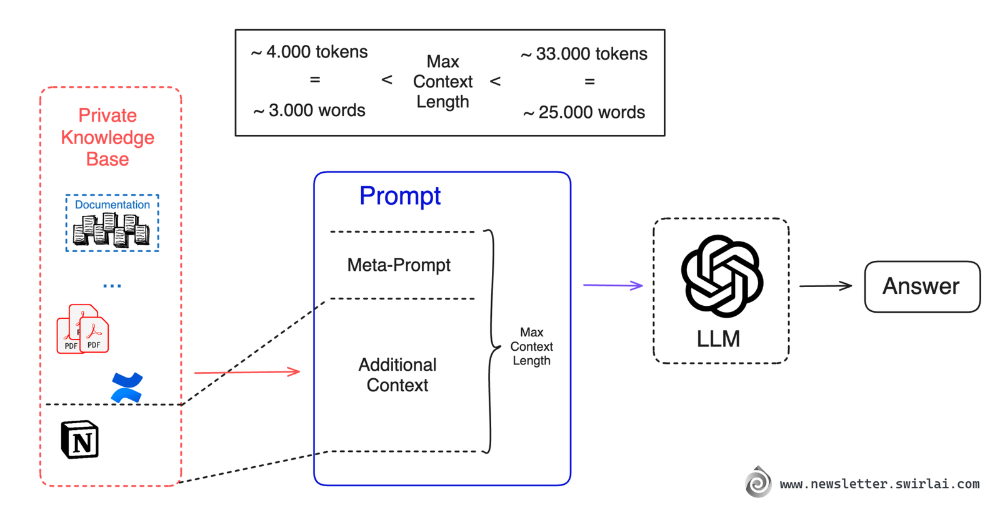
NoteThe numbers on the slides have changed, and the argument has not. The slides, written in January 2024, give context windows of about 4,000 to 33,000 tokens, with 1,000 tokens equal to roughly 750 words. Windows have grown since then: the small model of this lesson accepts 32,768 tokens, and large hosted models accept far more. Three costs remain. A company's documents are still larger than any window. Every token in the prompt costs time and, with a hosted model, money, on every single question. And a model answers less accurately when the passage it needs is buried in a long, mostly irrelevant prompt. The textbook makes the same point with a calculation: if a product has 30 reviews and each takes 100 milliseconds to process, reading all of them costs 3 seconds for every question.
The solution is to send the model only the few passages that bear on the question. Finding those passages is called retrieval, and the whole method is retrieval-augmented generation: the model's generation is augmented with retrieved text. RAG gives a model new knowledge without training it again, which is why the slides call it cost-efficient: the same model serves new data as soon as the data is indexed.
2. From Retriever-Reader to RAG
RAG did not appear from nowhere. Chapter 7 of the textbook builds a question-answering system over product reviews and arrives at RAG in its last section. The path it takes explains the design.
The starting point is the retriever-reader architecture. A retriever selects, from all documents, the few that are relevant to the question. A reader then extracts the answer from those few.
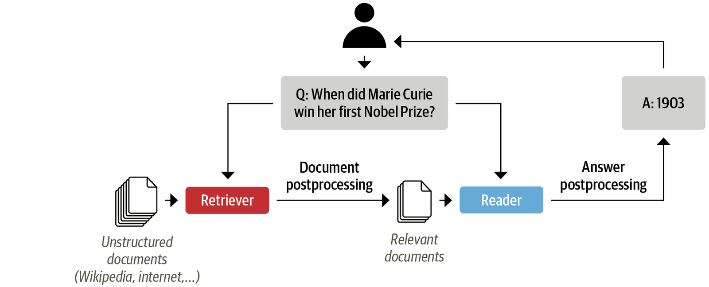
Retrievers come in two kinds.
- A sparse retriever represents each document by the words it contains and scores documents by the words they share with the query. BM25 is the standard example. It is fast and needs no training, but it finds nothing when the question and the answer use different words.
- A dense retriever turns the query and each document into an embedding, a vector that encodes meaning, and scores documents by the similarity of the vectors. It can match "Is it good for reading?" with a review that says "I use it for books every night", although the two share almost no words.
The textbook's dense retriever is DPR, which uses two BERT encoders: one for questions and one for passages.
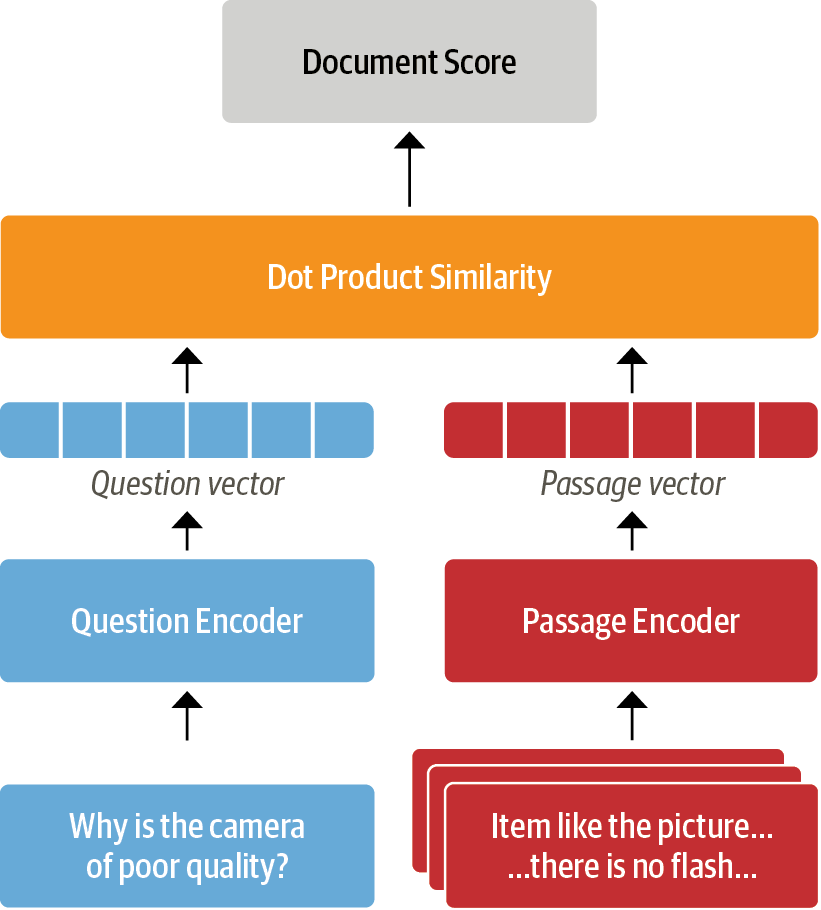
NoteDense is not automatically better. In the textbook's experiment, BM25 reached almost perfect recall once it returned ten documents, and DPR gave no improvement in recall over it. Dense retrieval helps most when users phrase things differently from the documents. Many production systems combine both kinds.
The reader of the textbook is extractive: it marks a span of words inside a retrieved document, as the NER model of Week 3 marked entities. Its answer can therefore only be a phrase that already stands in one document. RAG, introduced by Lewis et al. (2020), replaces the reader with a generator: a language model that writes the answer in its own words, and can combine evidence from several passages.
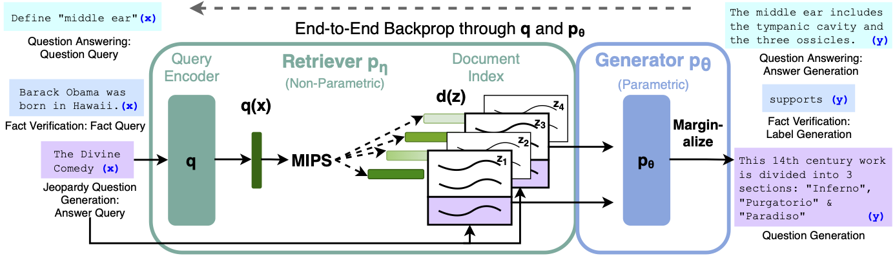
Common confusion"RAG" names two different things. In the original paper, and in this figure, the retriever and the generator are trained together: the dashed arrow is the training signal flowing through both. What industry calls RAG today, and what you build in this lesson, has no training at all. A ready-made embedding model retrieves, a ready-made chat model generates, and a prompt joins them. The idea is the same; the engineering is far simpler.
3. The Pipeline: Index Once, Answer Many Times
A RAG system works in two phases. Indexing happens once, before any question is asked: the documents are loaded, split, embedded and stored. Retrieval and generation happen for every question.
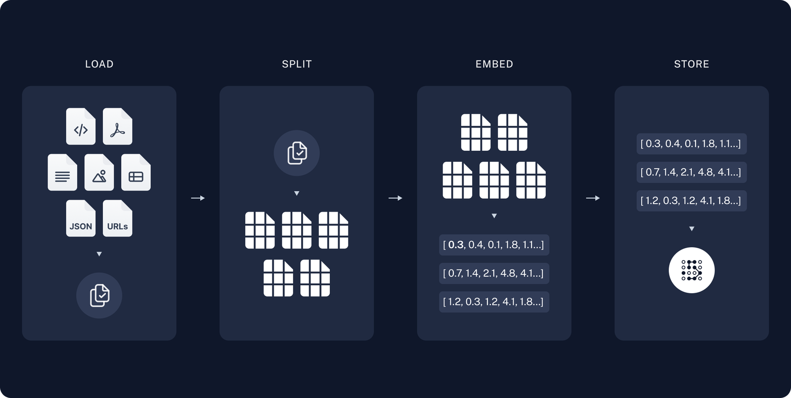
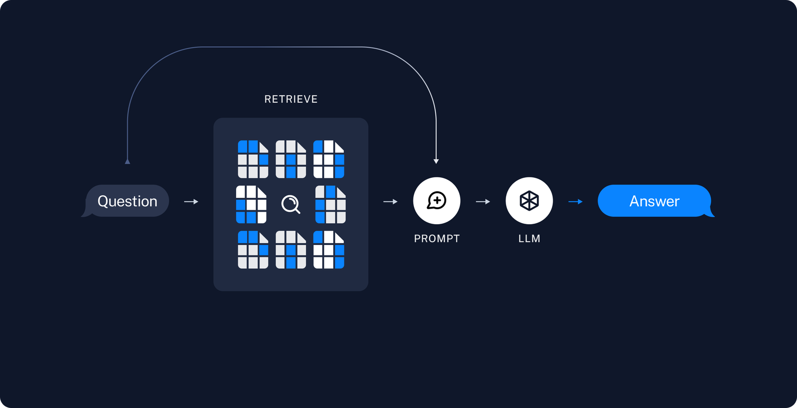
The course slides list the same pipeline as nine steps.
Indexing
- Split the text of the whole knowledge base into chunks. A chunk is one piece of context that can be retrieved.
- Embed each chunk: an embedding model turns it into a vector.
- Store all the vectors in a vector database.
- Save the text of each chunk with a pointer to its vector.
Answering a question
- Embed the question with the same embedding model.
- Query the vector database with the question's vector.
- The database performs an approximate nearest neighbour (ANN) search and returns the closest vectors.
- Map the returned vectors back to the text chunks they stand for.
- Pass the question and the retrieved chunks to the model in one prompt.
The slides also show all nine steps in one diagram. Follow the circled numbers.
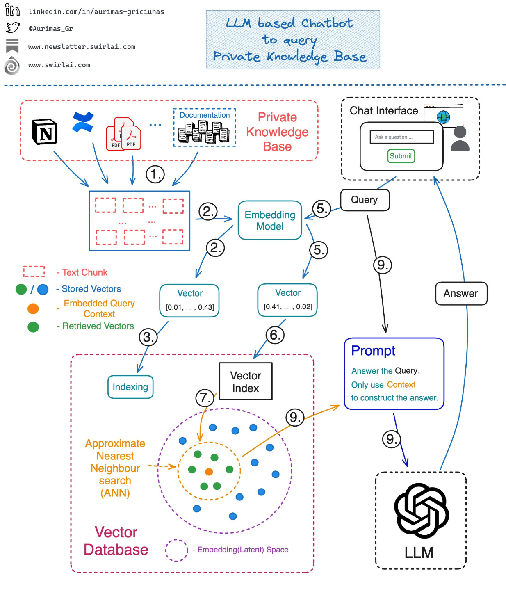
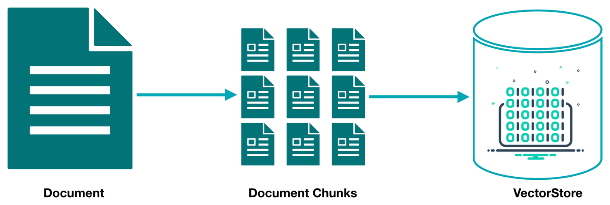
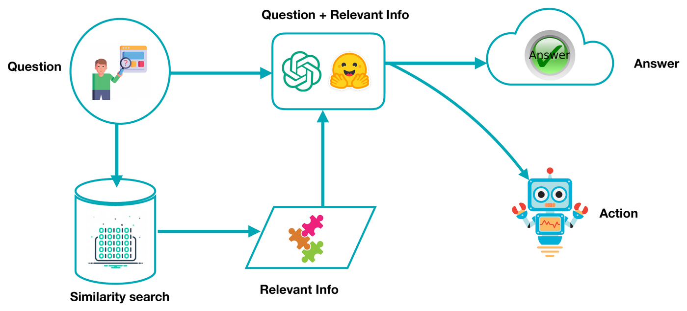
Before writing the code, watch the whole pipeline once in the animation:
The following sections build each stage in turn. The data is the one the textbook uses: SubjQA, a collection of customer reviews with questions about them. From its electronics part we take the reviews of a single product, a tablet computer, and ask the textbook's own question: "Is it good for reading?"
4. Step 1: Load
A document loader reads data from a source and returns it in one standard form. Whatever the source is (a PDF, a web page, a spreadsheet, a chat export), the result is a list of Document objects. A Document has two parts: page_content, the text, and metadata, a dictionary that records where the text came from.
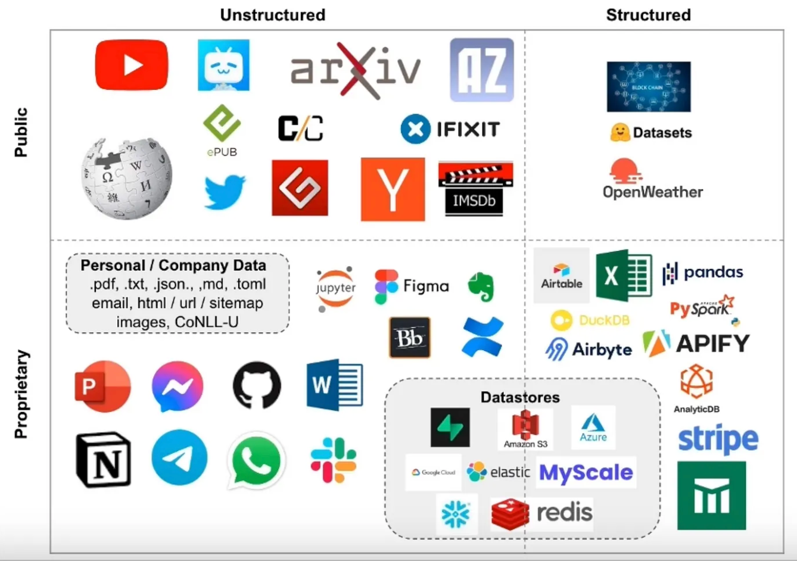
The reviews are in a CSV file, so pandas reads them, and each review becomes a Document.
import pandas as pd
from langchain_core.documents import Document
BASE = "https://raw.githubusercontent.com/megagonlabs/SubjQA/master/SubjQA/electronics/splits/"
subjqa = pd.concat([pd.read_csv(BASE + f"{split}.csv") for split in ("train", "dev", "test")])
tablet = subjqa[subjqa["item_id"] == "B0074BW614"] # the product used in the textbook
reviews = tablet.drop_duplicates("review_id")
docs = [
Document(page_content=row.review.replace("ANSWERNOTFOUND", "").strip(),
metadata={"review_id": row.review_id, "item_id": row.item_id})
for row in reviews.itertuples()
]
print("Rows in the electronics data:", len(subjqa), "| different reviews:", subjqa["review_id"].nunique())
print("Reviews of the tablet:", len(docs))
print(docs[0].page_content[:300])
print(docs[0].metadata)Rows in the electronics data: 3324 | different reviews: 1615
Reviews of the tablet: 56The data has one row for every question, and several questions can refer to the same review, so the duplicates are dropped. The 1,615 different reviews are the same count that the textbook reports after loading its document store. The marker ANSWERNOTFOUND at the end of each review belongs to the dataset's format, so it is removed.
TipAlways keep metadata. The
review_idcosts nothing to store. Without it you can never show a user where an answer came from, and you cannot measure the retriever (Section 9).
Loading a PDF and a web page
Your project's sources will mostly be PDF files and web pages. The slides name the loaders for both. Each returns the same Document objects, so everything after this step is unchanged.
import os
os.environ.setdefault("USER_AGENT", "606363-course-notebook") # a web client should name itself
from langchain_community.document_loaders import PyPDFLoader, WebBaseLoader
# The RAG paper of Lewis et al. (2020), and this course's syllabus page
PDF_SOURCE = "https://arxiv.org/pdf/2005.11401"
WEB_SOURCE = "https://zmomani.github.io/ComputingSystemsDS-AI/lessons/syllabus.html"
pdf_pages = PyPDFLoader(PDF_SOURCE).load() # one Document per page
first = pdf_pages[0]
print(len(pdf_pages), "pages |", first.metadata.get("source"), "| page", first.metadata.get("page"))
print(first.page_content[:200])
web_docs = WebBaseLoader(WEB_SOURCE).load() # one Document for the whole page
print(len(web_docs[0].page_content), "characters from", web_docs[0].metadata.get("source"))PyPDFLoader also accepts the path of a file that you have uploaded to Colab. The slides mention a third loader, for YouTube videos. It first transcribes the audio with a speech model, which takes minutes and a further download, so it is not run here.
5. Step 2: Split
A review can be thousands of characters long, and a report can be hundreds of pages. Retrieval works on smaller pieces, called chunks, for two reasons. A small chunk about one topic matches a question more precisely than a long text about ten. And the embedding model of the next step can only read a limited length.
Splitting is, in the words of the slides, important and tricky: the pieces must stay meaningful. Two splitters are compared there.
CharacterTextSplittersplits at one separator, by default a blank line, and then joins the pieces into chunks.RecursiveCharacterTextSplittertries a list of separators in order: paragraphs first, then lines, then words, then single characters. It moves to a finer separator only when a piece is still too large.
Both have two settings. chunk_size is the maximum length of a chunk in characters. chunk_overlap is the number of characters that the end of one chunk shares with the start of the next, so that a sentence cut at a border still appears whole in one of the two.
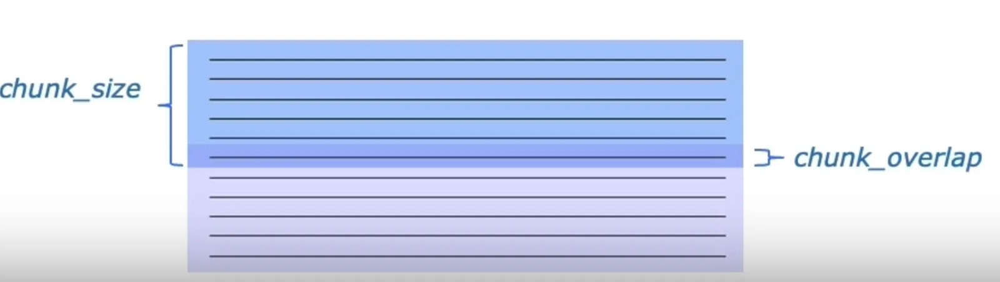
The slides demonstrate the settings with very small numbers, so that the effect can be read off directly.
from langchain_text_splitters import CharacterTextSplitter, RecursiveCharacterTextSplitter
r_splitter = RecursiveCharacterTextSplitter(chunk_size=26, chunk_overlap=4)
c_splitter = CharacterTextSplitter(chunk_size=26, chunk_overlap=4)
text1 = "abcdefghijklmnopqrstuvwxyz" # 26 characters
text2 = "abcdefghijklmnopqrstuvwxyzabcdefg" # 33 characters
text3 = "a b c d e f g h i j k l m n o p q r s t u v w x y z" # 26 letters with spaces
print(r_splitter.split_text(text1))
print(r_splitter.split_text(text2))
print(r_splitter.split_text(text3))
print(c_splitter.split_text(text3))['abcdefghijklmnopqrstuvwxyz']
['abcdefghijklmnopqrstuvwxyz', 'wxyzabcdefg']
['a b c d e f g h i j k l m', 'l m n o p q r s t u v w x', 'w x y z']
['a b c d e f g h i j k l m n o p q r s t u v w x y z']Read the four lines in order. The first text fits into one chunk exactly. The second is seven characters too long; its second chunk begins with wxyz, the four characters of overlap. The third text is split at spaces, and each chunk repeats the end of the one before: l m, then w x. In the fourth line the character splitter returns the whole text as one chunk of 51 characters, well over the limit of 26. Its only separator is a blank line, the text contains none, and so it cannot split at all.
Common confusion
chunk_sizeis a target, and only the recursive splitter can always meet it.CharacterTextSplitternever cuts inside a piece. When a piece between two separators is longer thanchunk_size, it is kept whole and a warning is printed. For ordinary text, useRecursiveCharacterTextSplitter.
Now split the reviews. split_documents copies each review's metadata to all of its chunks, and add_start_index=True also records where in the review each chunk begins.
splitter = RecursiveCharacterTextSplitter(chunk_size=400, chunk_overlap=50, add_start_index=True)
chunks = splitter.split_documents(docs)
print(len(docs), "reviews ->", len(chunks), "chunks")
print(chunks[0].metadata)
print(chunks[0].page_content)56 reviews -> 363 chunksCommon confusionThree different limits are easily confused. Chunk size is your choice, measured in characters. The maximum sequence length of the embedding model is fixed by the model and measured in tokens: the model of the next step reads 128 tokens, and silently ignores whatever comes after them. The context window of the chat model is the largest of the three, and limits how many chunks you can place in one prompt. The chunk size of 400 characters is chosen with the second limit in mind: 400 characters of English are roughly 100 tokens, so almost every chunk is embedded whole. A chunk of 2,000 characters would be stored whole, but found only by its first quarter.
6. Step 3: Embed
An embedding model turns a text into a vector, a list of numbers, such that texts with similar meaning receive vectors that point in similar directions. In Week 2 you used the hidden state of a transformer as the features of a text. An embedding model is trained for exactly this purpose: one vector that represents the meaning of a whole text. Here the model is paraphrase-multilingual-MiniLM-L12-v2, a small open model trained on about 50 languages. It runs inside Colab, without a key.
from langchain_huggingface import HuggingFaceEmbeddings
EMBEDDING_ID = "sentence-transformers/paraphrase-multilingual-MiniLM-L12-v2"
embeddings = HuggingFaceEmbeddings(model_name=EMBEDDING_ID, encode_kwargs={"normalize_embeddings": True})
vector = embeddings.embed_query("Is it good for reading?")
print(len(vector), "numbers; the first five:", [round(x, 3) for x in vector[:5]])With this model the vector has 384 numbers. normalize_embeddings=True scales every vector to length 1, so that the dot product of two vectors equals their cosine similarity. The animation shows this geometry in two dimensions:
Common confusionThe embedding model and the chat model are two different models. The embedding model only reads: text in, one vector out. It cannot write a word. The chat model reads and writes, but plays no part in the search. A RAG system needs both, and they are chosen separately. The question must be embedded with the same embedding model as the chunks (step 5 of the slides), because vectors from two different models are not comparable.
7. Step 4: Store
A vector store keeps the vectors together with their texts and metadata, and answers one kind of request: given this vector, return the stored ones closest to it. This lesson uses InMemoryVectorStore, which keeps everything in the memory of the notebook. It needs no installation and no account, and for a few hundred chunks it is fast.
from langchain_core.vectorstores import InMemoryVectorStore
vector_store = InMemoryVectorStore(embeddings)
ids = vector_store.add_documents(chunks) # embeds every chunk and stores it
print(len(ids), "chunks stored")
question = "Is it good for reading?"
for doc, score in vector_store.similarity_search_with_score(question, k=4):
print(f"{score:.3f} | {doc.metadata['review_id'][:8]} | {doc.page_content[:110]!r}")The second half is a complete search: the question is embedded, compared with all 363 stored vectors, and the four closest chunks are returned with their scores. The score is the cosine similarity, so a higher score means a closer match. Read the four chunks. Do they talk about reading? Retrieval is the stage where a RAG system most often goes wrong, and looking at what was retrieved is the first thing to do when an answer is poor.
NoteWhere is the approximate search of step 7?
InMemoryVectorStorecompares the question with every stored vector. That is exact, and for 363 chunks it is instant. A vector database for millions of chunks cannot afford it, so it builds an index that finds nearly the closest vectors after looking at a small fraction of them. That is the approximate nearest neighbour search of the slides. The interface you call stays the same.
Other vector stores: Chroma and Pinecone
The in-memory store disappears when the notebook closes. For your project the milestone names Chroma, which saves its data in a folder. The script of the course slides uses Pinecone, a hosted database that needs an account and a key. Because every vector store in LangChain has the same interface, only the lines that create the store change.
# Chroma: stored in a local folder. pip install langchain-chroma
from langchain_chroma import Chroma
vector_store = Chroma(collection_name="tablet_reviews", embedding_function=embeddings,
persist_directory="./chroma_db")
vector_store.add_documents(chunks)
# Pinecone: a hosted service (account and API key needed). pip install langchain-pinecone
# The index must already exist, with dimension 384 for this embedding model.
from langchain_pinecone import PineconeVectorStore
vector_store = PineconeVectorStore.from_documents(chunks, embeddings, index_name="test")NoteThe Pinecone lines of the 2024 script no longer run. The script begins with
pinecone.init(api_key=..., environment=...). The current Pinecone library has removed that function and stops with an error that asks you to create aPineconeobject. The importfrom langchain.vectorstores import Pineconehas gone as well; the class is nowPineconeVectorStorein the packagelangchain-pinecone. The Chroma lines above were run for this lesson. The Pinecone lines follow the current interface but were not run, because they need an account.
8. Step 5: Retrieve and Generate
Four stages are built: loading, splitting, embedding and storage. The slides call the whole system chat with your documents and draw it in five boxes. The last two, retrieval and output, are this section.
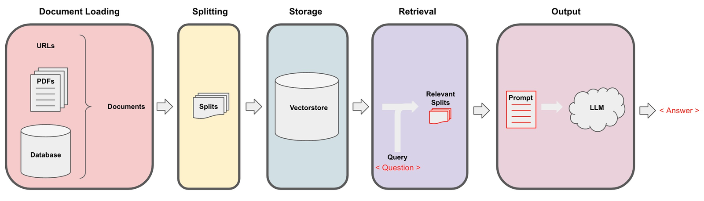
Everything is in place for the second phase. A retriever is the vector store seen as a chain component: it receives a question and returns documents. Because it is a Runnable, it can be joined with | like the components of the first part.
retriever = vector_store.as_retriever(search_kwargs={"k": 4})
def format_docs(found):
return "\n\n".join(f"[{i}] {d.page_content}" for i, d in enumerate(found, start=1))
rag_prompt = ChatPromptTemplate.from_messages([
("system", "Answer the question using only the customer reviews below. If the reviews do not "
"contain the answer, say that you do not know. Answer in at most three sentences.\n\n"
"Reviews:\n{context}"),
("human", "{question}"),
])
rag_chain = (
{"context": retriever | format_docs, "question": RunnablePassthrough()}
| rag_prompt
| llm
| StrOutputParser()
)
print(rag_chain.invoke("Is it good for reading?"))The dictionary at the top of the chain is the pattern of Section 6 of the first part. The question enters twice. Under context it goes through the retriever and then through format_docs, which joins the four chunks into one numbered text. Under question it passes through unchanged. The prompt therefore receives both of its placeholders, and steps 5 to 9 of the slides are these few lines.
Two parts of the system prompt do the work that makes this RAG and not ordinary chat. "Using only the customer reviews below" keeps the model to the retrieved text. "Say that you do not know" gives it a permitted way out, which reduces invention when retrieval finds nothing useful.
With and without retrieval
Ask the same question with the model alone, and compare.
question = "Is it good for reading?"
print("WITHOUT retrieval:\n", llm.invoke(question).content, "\n")
print("WITH retrieval:\n", rag_chain.invoke(question))Without retrieval the model cannot know what "it" is, so it can only ask or guess. With retrieval it answers about the tablet, from what its buyers wrote. Then ask something that the reviews cannot answer, and see whether the model keeps to its instruction:
print(rag_chain.invoke("Who won the football World Cup in 2010?"))Common confusionRetrieval always returns something. A similarity search returns the k closest chunks even when none of them is relevant: the closest of 363 irrelevant chunks is still the closest. For the football question the retriever hands the model four reviews of a tablet. Whether the answer is then "I do not know" depends entirely on the prompt and on the model. A small model keeps to such an instruction less reliably than a large one, so test this case with every model you use.
Returning the sources
An answer is more useful when the user can check it. The assign pattern of the first part keeps the retrieved documents beside the answer.
answer_chain = (
RunnablePassthrough.assign(context=lambda x: format_docs(x["documents"]))
| rag_prompt | llm | StrOutputParser()
)
rag_with_sources = (
{"documents": retriever, "question": RunnablePassthrough()}
| RunnablePassthrough.assign(answer=answer_chain)
)
result = rag_with_sources.invoke("How is the battery life?")
print(result["answer"], "\n")
for d in result["documents"]:
print("source:", d.metadata["review_id"][:8], "| starts at character", d.metadata["start_index"])9. Measuring the Retriever
The textbook does not trust a retriever by looking at one example. It measures recall at k: for what share of the questions is the right document among the top k results? SubjQA makes this possible, because every question in it was written about one particular review. We can therefore ask each of the dataset's questions about the tablet, and check whether a chunk of its review comes back.
test_questions = tablet[["question", "review_id"]].drop_duplicates()
print(len(test_questions), "question-review pairs")
def recall_at(k):
hits = 0
for row in test_questions.itertuples():
found = vector_store.similarity_search(row.question, k=k)
hits += any(d.metadata["review_id"] == row.review_id for d in found)
return hits / len(test_questions)
for k in (1, 3, 5, 10):
print(f"recall@{k}: {recall_at(k):.2f}")Recall rises with k, as it does in the textbook: the more chunks are returned, the more likely the right one is among them. A larger k has a price, however. Every extra chunk makes the prompt longer, the answer slower, and the relevant passage harder for the model to find. Choosing k is a balance between these, and it should be made with numbers of this kind.
NoteDo not expect a recall near 1 here. Many SubjQA questions are short and subjective, such as "How is the experience?", and could be about almost any of the 56 reviews. For such a question several reviews are reasonable results, but only one counts as correct. The measure is still useful for comparison: change the chunk size or the embedding model, run the cell again, and see whether the numbers go up or down.
10. RAG Chain or RAG Agent?
The chain of Section 8 retrieves exactly once, for every input, before the model is called. This is called two-step RAG. It is simple, fast and predictable, and it is the right design when every question needs the documents.
Its weakness is the same fixedness. It retrieves for "hello". It cannot search a second time with better words when the first search fails, and it cannot break a question into two searches. In agentic RAG the search becomes a tool, and the model decides whether to call it, with what query, and how often.
# Needs a hosted chat model that supports tool calling (see the optional cell in the first part).
from langchain.agents import create_agent
from langchain_core.tools import tool
@tool
def search_reviews(query: str) -> str:
"""Search the customer reviews of the tablet and return the most relevant passages."""
return format_docs(vector_store.similarity_search(query, k=4))
agent = create_agent(
model=llm,
tools=[search_reviews],
system_prompt="Answer questions about the tablet from its customer reviews. "
"Search the reviews before you answer, and say so when they do not contain the answer.",
)
result = agent.invoke({"messages": [{"role": "user", "content": "Is it good for reading, and how long does the battery last?"}]})
print(result["messages"][-1].content)NoteWhy this example is not in the notebook. An agent needs a model that can reliably request a tool in a fixed format, called tool calling. Large hosted models are trained for it; the small local model of this lesson is not dependable at it. The structure of the code was checked for this lesson with a scripted stand-in model. You will build agents of this kind, with their loop of thought, action and observation, in Weeks 5 and 9.
| Two-step RAG chain | RAG agent | |
|---|---|---|
| Retrieval happens | Always, once | When the model decides, as often as it decides |
| Model calls per question | One | Two or more |
| Speed and cost | Low and predictable | Higher and variable |
| Suits | Questions that all need the documents | Mixed conversation, and questions that need several searches |
| Works with a small local model | Yes | Not reliably |
11. From the Lesson to Your Project
The milestone for this week asks for document loaders, a Chroma store and a basic RAG chain. The code of this part is that chain, with three exchanges: your own sources in place of the reviews (Section 4), Chroma in place of the in-memory store (Section 7), and a system prompt written for your topic (Section 8). Measure your retriever on a handful of questions whose source you know before you build on it (Section 9). The requirements themselves are on the project page.
12. Check Your Understanding: RAG
1. Give two reasons why pasting the whole knowledge base into the prompt is not a solution.
A real knowledge base is larger than the context window of any model. Even where it fits, every token is paid for in time and money on every question, and a model answers less accurately when the relevant passage is buried among irrelevant text.
2. What is the difference between a sparse and a dense retriever, and when does each one fail?
A sparse retriever such as BM25 scores documents by shared words; it fails when the question and the document express the same thing in different words. A dense retriever compares embeddings, which encode meaning; it can miss exact rare terms such as product codes, and it depends on how well its embedding model fits the domain.
3. In the original RAG paper the retriever and the generator are trained together. What is trained in the system of this lesson?
Nothing. A ready-made embedding model retrieves, a ready-made chat model generates, and a prompt connects the two.
4. Which stages belong to indexing, and which are repeated for every question?
Indexing is done once: load, split, embed the chunks, store. For every question: embed the question, search the store, build the prompt from the retrieved chunks, and generate.
5. With chunk_size=26 and chunk_overlap=4, the recursive splitter turns the 33-character text abcdefghijklmnopqrstuvwxyzabcdefg into two chunks. What is the second one, and why?
wxyzabcdefg. The first chunk takes 26 characters. The second starts four characters before the end of the first, which is the overlap, and so begins with wxyz.
6. Your embedding model reads at most 128 tokens and your chunks are 2,000 characters long. What goes wrong, and will you see an error?
Only about the first quarter of each chunk is embedded; the remainder is ignored. There is no error. The chunk is stored whole and can be passed to the chat model whole, but it can only be found by the content of its beginning.
7. Why must the question be embedded with the same model as the chunks?
Each embedding model has its own vector space. Similarity between a vector from one model and a vector from another has no meaning, and the two may not even have the same number of dimensions.
8. A user asks the review chatbot about football, and it answers confidently from tablet reviews. Which part of the system failed?
The retriever did what it always does: it returned the closest chunks, although none was relevant. The failure is in generation: the model did not follow the instruction to say that it does not know. The remedies are a stricter prompt, a stronger model, or a threshold on the similarity score below which no chunk is passed on.
9. Recall at 10 is much higher than recall at 3. Why not simply always use k = 10?
Every additional chunk lengthens the prompt, which makes the answer slower and, with a hosted model, more expensive. More irrelevant chunks also make it harder for the model to use the relevant one. k is a balance between finding the right passage and overloading the model.
13. Summary and Further Reading: RAG
What you learned: a language model alone cannot answer from documents it has not seen, and pasting everything into the prompt does not scale. RAG retrieves a few relevant chunks and gives them to the model with the question. It descends from the retriever-reader architecture of extractive question answering, with a generator in place of the reader. Indexing (load, split, embed, store) is done once; retrieval and generation are done for every question. Chunk size must respect the limit of the embedding model. A retriever should be measured, and recall at k is the simplest measure. A fixed chain is enough when every question needs the documents; an agent decides for itself when to search.
Further reading
- Tunstall, von Werra & Wolf, Natural Language Processing with Transformers, Revised Edition (O'Reilly, 2022), Chapter 7. Code and figures: https://github.com/nlp-with-transformers/notebooks
- Lewis et al. (2020), "Retrieval-Augmented Generation for Knowledge-Intensive NLP Tasks": https://arxiv.org/abs/2005.11401
- Karpukhin et al. (2020), "Dense Passage Retrieval for Open-Domain Question Answering": https://arxiv.org/abs/2004.04906
- Bjerva et al. (2020), "SubjQA: A Dataset for Subjectivity and Review Comprehension": https://arxiv.org/abs/2004.14283 · data: https://github.com/megagonlabs/SubjQA
- LangChain documentation, retrieval: https://docs.langchain.com/oss/python/langchain/retrieval
- LangChain documentation, building a semantic search engine: https://docs.langchain.com/oss/python/langchain/knowledge-base
- LangChain documentation, building a RAG agent: https://docs.langchain.com/oss/python/langchain/rag
Figure credits. The three architecture figures come from the textbook's companion repository and are used under its Apache 2.0 licence. The indexing and retrieval figures come from the LangChain documentation and are used under its MIT licence. The remaining figures come from Dr. Abdulkarim Albanna's course slides. Of these, three originate from the SwirlAI Newsletter (newsletter.swirlai.com), as marked on them, and three (the data sources, the five-stage pipeline, and chunk size and overlap) from the DeepLearning.AI short course "LangChain: Chat with Your Data". Product logos that appear in the figures are trademarks of their owners.
Chat with Databases
Introduction
LangChain provides powerful tools to interact with your databases using natural language. This application demonstrates how to create a chat interface that allows users to query databases in conversational language instead of writing SQL.
Why use LangChain for database interactions?
- Query databases using natural language
- Convert user questions to optimized SQL
- Interpret results in human-readable format
- Handle follow-up questions with context
- Protect against SQL injection with built-in safeguards
Chat Interface
A sample conversation with the demo assistant over the Chinook sample database (a digital music store):
Assistant: Hello! I'm your database assistant. I can help you query the sample Chinook database.
User: Which country's customers spent the most?
Assistant: Looking at the data, customers from the USA spent the most, with a total of $523.06.
User: Who are the top 3 best selling artists?
Assistant: The top 3 best selling artists are: 1. Iron Maiden - 140 units sold 2. U2 - 107 units sold 3. Metallica - 91 units sold
Database Schema
The Chinook schema is organised around these main tables.
Customer
| Column | Type | Constraints |
|---|---|---|
| CustomerId | INTEGER | Primary key |
| FirstName | NVARCHAR(40) | Not null |
| LastName | NVARCHAR(20) | Not null |
| Country | NVARCHAR(40) | — |
| NVARCHAR(60) | Not null |
Invoice
| Column | Type | Constraints |
|---|---|---|
| InvoiceId | INTEGER | Primary key |
| CustomerId | INTEGER | Foreign key → Customer |
| InvoiceDate | DATETIME | Not null |
| BillingCountry | NVARCHAR(40) | — |
| Total | NUMERIC(10,2) | Not null |
Artist
| Column | Type | Constraints |
|---|---|---|
| ArtistId | INTEGER | Primary key |
| Name | NVARCHAR(120) | — |
Album
| Column | Type | Constraints |
|---|---|---|
| AlbumId | INTEGER | Primary key |
| Title | NVARCHAR(160) | Not null |
| ArtistId | INTEGER | Foreign key → Artist |
Key relationships
- Each Customer can have many Invoices.
- Each Artist can have many Albums.
- Each Album can have many Tracks.
- Tracks and Invoices are linked through InvoiceLine — each invoice line connects one Invoice to one Track.
How LangChain Connects to Databases
LangChain's SQLDatabaseToolkit gives an AI agent a set of tools for querying and working with SQL databases:
| Tool | Purpose |
|---|---|
QuerySQLDatabaseTool |
Executes SQL queries |
InfoSQLDatabaseTool |
Gets schema information |
ListSQLDatabaseTool |
Lists available tables |
QuerySQLCheckerTool |
Validates SQL queries before execution |
The role of the language model
The LLM acts as the bridge between natural language and SQL. It:
- Interprets the user's question.
- Writes a valid SQL query based on the schema.
- Reviews the query for errors or security issues.
- Turns raw results into a readable answer.
- Keeps conversation context for follow-up questions.
Architecture Overview — System Components
- Database Connection: SQLAlchemy connection to your database (SQLite, MySQL, PostgreSQL, etc.)
- LLM Integration: Connection to OpenAI, Anthropic, or other LLM APIs
- LangChain Tools: Specialized tools for SQL query generation and validation
- Agent Framework: LangChain's agent system for orchestrating complex interactions
- Chat Interface: Frontend for user interactions with the system
Security Considerations
Building Q&A systems over SQL databases means executing model-generated SQL, which carries inherent risk. Recommendations:
- Always use read-only database connections when possible
- Scope database permissions as narrowly as possible
- Consider implementing additional validation layers
- Monitor query patterns and implement rate limiting
Process Flow
Worked example: "Which country's customers spent the most?"
- User Query Input — The user enters a natural language question about the database data.
- Database Schema Analysis — The system uses
ListSQLDatabaseToolandInfoSQLDatabaseToolto understand the database structure. For this question the relevant tables are Customer and Invoice. - SQL Query Generation — The LLM converts the natural language question into a SQL query based on the schema:
SELECT c.Country, SUM(i.Total) AS TotalSpent
FROM Customer c
JOIN Invoice i ON c.CustomerId = i.CustomerId
GROUP BY c.Country
ORDER BY TotalSpent DESC
LIMIT 1;- Query Validation — The
QuerySQLCheckerToolvalidates the SQL query for errors and potential improvements. - Database Execution — The
QuerySQLDatabaseToolexecutes the SQL query against the database. Result:USA, 523.06. - Result Interpretation — The LLM translates the raw query results into a natural language response.
Sample Queries
| Question | Tags |
|---|---|
| Which country's customers spent the most? | Sales · Geography · Aggregation |
| Who are the top 3 best selling artists? | Artists · Sales · Ranking |
| What's the most popular music genre by sales? | Genres · Popularity · Analysis |
| Which customer has purchased the most tracks? | Customers · Purchases · Loyalty |
| What was the highest sales month in 2021? | Time · Sales · Seasonal |
| Which employee has the highest sales through their customers? | Employees · Customers · Relationships |
Implementation Code
Setting Up the Environment
# Install required packages (run in a terminal):
# pip install langchain langchain-community langchain-openai langgraph sqlalchemy requests
# Import necessary modules
import os
from langchain_openai import ChatOpenAI
from langchain_community.utilities import SQLDatabase
from langchain_community.agent_toolkits.sql.prompt import SQL_PREFIX
from langchain_community.tools.sql_database.tool import QuerySQLDatabaseTool
from langgraph.prebuilt import create_react_agent
# Set your OpenAI API key
os.environ["OPENAI_API_KEY"] = "your-api-key-here"Database Connection
# Connect to an SQLite Database
from sqlalchemy import create_engine
from sqlalchemy.pool import StaticPool
# For an existing SQLite database
db_path = "chinook.db" # Path to your SQLite database
engine = create_engine(f"sqlite:///{db_path}")
db = SQLDatabase(engine)
# Alternatively, for in-memory testing with example data
def get_in_memory_db():
import sqlite3
import requests
url = "https://raw.githubusercontent.com/lerocha/chinook-database/master/ChinookDatabase/DataSources/Chinook_Sqlite.sql"
response = requests.get(url)
sql_script = response.text
connection = sqlite3.connect(":memory:", check_same_thread=False)
connection.executescript(sql_script)
return create_engine(
"sqlite://",
creator=lambda: connection,
poolclass=StaticPool,
connect_args={"check_same_thread": False},
)
engine = get_in_memory_db()
db = SQLDatabase(engine)Creating the LangChain Agent
# Initialize Language Model
llm = ChatOpenAI(model="gpt-4o", temperature=0) # You can also use gpt-4o-mini for lower cost
# Initialize SQL Database Toolkit
from langchain_community.agent_toolkits.sql.toolkit import SQLDatabaseToolkit
toolkit = SQLDatabaseToolkit(db=db, llm=llm)
# Get the tools from the toolkit
tools = toolkit.get_tools()
# Build the system prompt from LangChain's standard SQL-agent prompt
# (the same text as the "langchain-ai/sql-agent-system-prompt" prompt on LangChain Hub)
system_message = SQL_PREFIX.format(dialect="SQLite", top_k=5)
# Create the agent
agent_executor = create_react_agent(
llm,
tools,
prompt=system_message
)Django Integration (views.py)
# views.py for Django integration
from django.http import JsonResponse
from django.views.decorators.csrf import csrf_exempt
import json
@csrf_exempt
def chat_with_db(request):
if request.method == 'POST':
try:
data = json.loads(request.body)
user_message = data.get('message', '')
# Process the user message with our agent
response = agent_executor.invoke(
{"messages": [("user", user_message)]}
)
# Extract the final AI message
ai_message = response["messages"][-1].content
return JsonResponse({
'success': True,
'message': ai_message
})
except Exception as e:
return JsonResponse({
'success': False,
'error': str(e)
})
return JsonResponse({
'success': False,
'error': 'Only POST requests are supported'
})Frontend JavaScript
// JavaScript for the chat interface
document.addEventListener('DOMContentLoaded', function() {
const messageInput = document.querySelector('.chat-input input');
const sendButton = document.querySelector('.chat-input button');
const messagesContainer = document.querySelector('.chat-messages');
const sampleQueries = document.querySelectorAll('.sample-query');
// Function to add a message to the chat
function addMessage(message, isUser = false) {
const messageDiv = document.createElement('div');
messageDiv.className = isUser ? 'user-message' : 'bot-message';
messageDiv.innerHTML = message;
messagesContainer.appendChild(messageDiv);
messagesContainer.scrollTop = messagesContainer.scrollHeight;
}
// Function to send a message to the backend
async function sendMessage(message) {
addMessage(message, true);
// Show loading indicator
const loadingDiv = document.createElement('div');
loadingDiv.className = 'bot-message';
loadingDiv.innerHTML = '<i class="fas fa-spinner fa-spin"></i> Thinking...';
messagesContainer.appendChild(loadingDiv);
try {
const response = await fetch('/chat_with_db/', {
method: 'POST',
headers: {
'Content-Type': 'application/json',
},
body: JSON.stringify({ message: message }),
});
const data = await response.json();
// Remove loading indicator
messagesContainer.removeChild(loadingDiv);
if (data.success) {
addMessage(data.message);
} else {
addMessage('Error: ' + data.error);
}
} catch (error) {
// Remove loading indicator
messagesContainer.removeChild(loadingDiv);
addMessage('An error occurred while connecting to the server.');
}
}
// Event listener for send button
sendButton.addEventListener('click', function() {
const message = messageInput.value.trim();
if (message) {
sendMessage(message);
messageInput.value = '';
}
});
// Event listener for enter key
messageInput.addEventListener('keypress', function(e) {
if (e.key === 'Enter') {
const message = messageInput.value.trim();
if (message) {
sendMessage(message);
messageInput.value = '';
}
}
});
// Event listeners for sample queries
sampleQueries.forEach(query => {
query.addEventListener('click', function() {
const questionText = this.querySelector('p').textContent;
messageInput.value = questionText;
messageInput.focus();
});
});
});Closing note
Always implement proper permissions and validation when connecting LLMs to databases.
Built with LangChain, Python, and modern web technologies.
Try it yourself
▶ Try it runs an example in the editor panel, inside your browser — change the code and press Ctrl+Enter to run it again. Examples that use PyTorch, Transformers, LangChain or an API cannot run in a browser: press ▶ Run in Colab to open them in this week's Google Colab notebook, ready to run.
Run in your browser
Self-contained versions of this week's mechanisms, written with NumPy, scikit-learn or plain Python so they run here.
from sklearn.feature_extraction.text import TfidfVectorizer
from sklearn.metrics.pairwise import cosine_similarity
chunks = [
"Transformers use self-attention to relate all tokens in a sequence.",
"BERT is an encoder-only model pre-trained with masked language modelling.",
"GPT models are decoder-only and generate text left to right.",
"Amman is the capital of Jordan and its largest city.",
"Petra is a historical city in southern Jordan carved into rock.",
"A vector store returns the chunks whose embeddings are nearest to the query.",
]
question = "How do GPT and BERT models differ?"
k = 2
# TF-IDF stands in for an embedding model here: it matches shared words, whereas a real
# embedding model (e.g. all-MiniLM-L6-v2) also matches meaning, such as "capital" ~ "largest city".
vec = TfidfVectorizer().fit(chunks + [question])
sims = cosine_similarity(vec.transform([question]), vec.transform(chunks))[0]
top = sims.argsort()[::-1][:k]
print("ranking:")
for i in sims.argsort()[::-1]:
print(f" {sims[i]:.3f} {chunks[i]}")
context = "\n".join(f"- {chunks[i]}" for i in top)
prompt = f"Answer using only the context below.\n\nContext:\n{context}\n\nQuestion: {question}"
print("\nprompt sent to the LLM:\n" + prompt)def prompt_template(topic):
return f"List three key facts about {topic}, one per line."
def fake_llm(prompt): # stands in for ChatOpenAI / Ollama
facts = {"MCP": ["Uses JSON-RPC 2.0", "Servers expose tools, resources and prompts", "Transports: stdio and Streamable HTTP"]}
topic = prompt.split("about ")[1].split(",")[0]
return "\n".join(facts.get(topic, ["(no facts)"]))
def output_parser(text):
return [line.strip() for line in text.splitlines() if line.strip()]
def chain(topic): # LCEL equivalent: prompt | llm | parser
return output_parser(fake_llm(prompt_template(topic)))
print(chain("MCP"))Test code for the course environment
from langchain_core.prompts import ChatPromptTemplate
from langchain_core.messages import AIMessage
from langchain_core.runnables import RunnableLambda
from langchain_core.output_parsers import StrOutputParser
prompt = ChatPromptTemplate.from_messages([
("system", "You are a helpful assistant."),
("human", "Summarize {text} for a {audience}."),
])
echo_model = RunnableLambda(lambda p: AIMessage(content=f"(the model received {len(p.to_messages())} messages)"))
chain = prompt | echo_model | StrOutputParser()
print(prompt.input_variables)
print(chain.invoke({"text": "the LangChain packages", "audience": "first-year student"}))from pydantic import BaseModel, Field
from langchain_core.output_parsers import PydanticOutputParser
class Source(BaseModel):
title: str = Field(description="Title of the source")
year: int = Field(description="Year of publication")
relevant: bool = Field(description="Is the source relevant to the research topic?")
parser = PydanticOutputParser(pydantic_object=Source)
print(parser.parse('{"title": "Attention Is All You Need", "year": 2017, "relevant": true}'))from langchain_text_splitters import RecursiveCharacterTextSplitter
text = ("RAG has two stages. First the documents are indexed.\n\n"
"Then a question is answered: the retriever finds the chunks closest to the question, "
"and the model writes an answer from them.\n\n"
"A chunk that is too large is cut off by the embedding model. A chunk that is too small loses its context.")
splitter = RecursiveCharacterTextSplitter(chunk_size=80, chunk_overlap=0)
for chunk in splitter.split_text(text):
print(len(chunk), repr(chunk))from langchain_core.embeddings import DeterministicFakeEmbedding
from langchain_core.vectorstores import InMemoryVectorStore
store = InMemoryVectorStore(DeterministicFakeEmbedding(size=64))
store.add_texts(["Petra is a historical city in southern Jordan.",
"Amman is the capital of Jordan.",
"BERT is an encoder-only transformer."])
for doc, score in store.similarity_search_with_score("Amman is the capital of Jordan.", k=2):
print(round(score, 3), "|", doc.page_content)# 1. Load Chinook into an in-memory SQLite DB and inspect it with SQLDatabase (no LLM needed)
# pip install langchain-community sqlalchemy requests
import sqlite3, requests
from sqlalchemy import create_engine
from sqlalchemy.pool import StaticPool
from langchain_community.utilities import SQLDatabase
url = "https://raw.githubusercontent.com/lerocha/chinook-database/master/ChinookDatabase/DataSources/Chinook_Sqlite.sql"
conn = sqlite3.connect(":memory:", check_same_thread=False)
conn.executescript(requests.get(url).text)
engine = create_engine("sqlite://", creator=lambda: conn, poolclass=StaticPool,
connect_args={"check_same_thread": False})
db = SQLDatabase(engine)
print(db.dialect)
print(db.get_usable_table_names())
print(db.get_table_info(["Customer", "Invoice"])[:800])# 2. Run the Process Flow SQL by hand and confirm the "USA, 523.06" result
sql = """
SELECT c.Country, SUM(i.Total) AS TotalSpent
FROM Customer c
JOIN Invoice i ON c.CustomerId = i.CustomerId
GROUP BY c.Country
ORDER BY TotalSpent DESC
LIMIT 1;
"""
print(db.run(sql))# 3. Look at the four tools the SQLDatabaseToolkit exposes
from langchain_openai import ChatOpenAI
from langchain_community.agent_toolkits.sql.toolkit import SQLDatabaseToolkit
llm = ChatOpenAI(model="gpt-4o-mini", temperature=0)
toolkit = SQLDatabaseToolkit(db=db, llm=llm)
for t in toolkit.get_tools():
print(f"{t.name}: {t.description[:90]}...")# 4. Ask the SQL agent a question and watch every intermediate step
from langchain_community.agent_toolkits.sql.prompt import SQL_PREFIX
from langgraph.prebuilt import create_react_agent
system_message = SQL_PREFIX.format(dialect="SQLite", top_k=5)
agent_executor = create_react_agent(llm, toolkit.get_tools(), prompt=system_message)
for step in agent_executor.stream(
{"messages": [("user", "Who are the top 3 best selling artists?")]},
stream_mode="values",
):
step["messages"][-1].pretty_print()